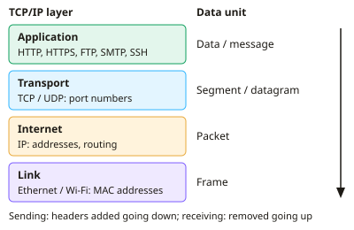

A-level Computer Science Year 12 · Topic 7
Internet protocols and security
Internet protocols and security explains how data finds its way across the internet, and how it is kept safe.
We will study the T C P I P stack, I P addressing, subnetting, N A T and D H C P, ports, sockets and application protocols.
Then we look at packet and circuit switching, D N S and U R Ls, network threats and firewalls, and public key cryptography with digital signatures and certificates.
- 7 subtopics
- 303 questions
- Free: 7.1 notes and 10 questions
In this topic
- 7.1The TCP/IP protocol stackFree below · 33 questions
- 7.2IP addressing, IPv4 and IPv6, subnetting, NAT and DHCPOpen in Full Marks · 29 questions
- 7.3Ports, sockets, MAC addresses and application protocols: HTTP, HTTPS, FTP, SMTP, POP3, IMAP and SSHOpen in Full Marks · 44 questions
- 7.4Packet switching, routing and circuit switchingOpen in Full Marks · 27 questions
- 7.5DNS, URLs and the structure of the InternetOpen in Full Marks · 71 questions
- 7.6Network security: malware, threats, firewalls and proxy serversOpen in Full Marks · 75 questions
- 7.7Public and private keys, digital signatures and digital certificatesOpen in Full Marks · 24 questions
7.1 · Free notes
The TCP/IP protocol stack

Key points
- The TCP/IP stack is a four-layer model: Application, Transport, Internet and Link (network access). Each layer has one job and only talks to the layers directly above and below it.
- Application layer: gives network services to software using protocols such as HTTP, HTTPS, FTP, SMTP, POP3, IMAP and SSH. A browser or email client hands its data to this layer.
- Transport layer: splits data into segments (TCP) or datagrams (UDP) and adds source and destination port numbers. These identify the application process on each host.
- TCP is connection-oriented and reliable. It uses a three-way handshake (SYN, SYN-ACK, ACK), sequence numbers, acknowledgements and retransmission of lost segments, and it reorders data at the destination.
- UDP is connectionless: no handshake, acknowledgements or retransmission. It has lower overhead and latency, so it suits live streaming, VoIP, online gaming and DNS queries, where a late packet is worse than a lost one.
- Internet layer: adds source and destination IP addresses to form a packet, and routers forward it between networks. IP is best-effort and unreliable. Each router reduces the TTL (hop limit) by 1, and the packet is discarded at 0, which stops endless loops.
- Link layer: puts the packet in a frame with source and destination MAC addresses for delivery across one local link (Ethernet or Wi-Fi). Switches forward frames using MAC addresses.
- Encapsulation: going down the stack at the sender, each layer adds a header (the link layer also adds a trailer). The receiver removes them in reverse order (decapsulation).
- A router works up to the Internet layer. It forwards by destination IP address and builds a new frame with new MAC addresses at each hop. The IP addresses stay the same (ignoring NAT).
- Packet switching: data is split into packets, each with a header. Packets may take different routes and arrive out of order. TCP uses sequence numbers to reassemble them.
- Advantages of layering: standard protocols let different vendors' systems interoperate. A layer can change (e.g. Ethernet to Wi-Fi) without altering the others. It also makes development and fault-finding easier.
In more detail
- Worked layers: sending an email: Application (SMTP) → Transport (TCP adds port numbers and sequence numbers) → Internet (IP adds source and destination IP addresses) → Link (adds MAC addresses in a frame).
- Worked encapsulation: each layer wraps the data from the layer above in its own header; the receiver removes them in reverse order.
- Worked TCP handshake: SYN → SYN-ACK → ACK sets up a connection before data is sent.
- TCP vs UDP: TCP guarantees delivery and order (web, email); UDP is faster with no guarantees (video calls, online games, DNS lookups).
- Why layers help: upgrading Wi-Fi only changes the link layer, so applications keep working unchanged.
Practice
The TCP/IP protocol stack: 10 questions
Pick an answer to check it, or open the answer for the explanation.
1. Which TCP/IP layer adds source and destination port numbers to the data?
- Application
- Link
- Transport
- Internet
Show answer
C: Transport. The transport layer (TCP or UDP) adds port numbers so the data reaches the correct process on the destination host.
2. Which layer of the TCP/IP stack is responsible for routing packets between networks using IP addresses?
- Transport
- Application
- Link
- Internet
Show answer
D: Internet. The Internet layer adds IP addresses and routers use them to forward packets between networks.
3. A browser sends a web request. What is the correct order of data units as it passes down the stack?
- Data → segment → packet → frame
- Data → packet → segment → frame
- Data → segment → frame → packet
- Data → frame → packet → segment
Show answer
A: Data → segment → packet → frame. Transport makes a segment, Internet wraps it in a packet, and Link wraps that in a frame for transmission.
4. What does a router mainly use to decide where to forward a packet?
- Source MAC address
- Destination IP address
- Destination port number
- Source port number
Show answer
B: Destination IP address. Routers work at the Internet layer and look up the destination IP address in their routing table.
5. Why is UDP often chosen for live video calls rather than TCP?
- It avoids retransmission delays, so lost packets are simply skipped
- It encrypts the video stream
- It guarantees all packets arrive in order
- It uses fewer IP addresses
Show answer
A: It avoids retransmission delays, so lost packets are simply skipped. UDP has no acknowledgements or retransmission, so there is lower latency. A late packet is useless in a live call.
6. A TCP sender gets no acknowledgement for a segment before its timer expires. What does it do?
- Asks the router to resend it
- Retransmits the segment
- Closes the connection permanently
- Switches to UDP
Show answer
B: Retransmits the segment. TCP provides reliability by retransmitting segments that are not acknowledged in time.
7. Which is a benefit of using a layered protocol stack?
- One layer can be replaced, e.g. Wi-Fi for Ethernet, without changing the others
- Each layer can read all the data from the others
- Data is sent without headers, making it faster
- All layers must be changed together when upgrading
Show answer
A: One layer can be replaced, e.g. Wi-Fi for Ethernet, without changing the others. Layers have defined interfaces, so one can be changed independently. This also supports interoperability between vendors.
8. A packet is sent with a TTL of 64 and passes through 7 routers. What is the TTL when it reaches the destination?
- 64
- 56
- 57
- 71
Show answer
C: 57. Each router reduces the TTL by 1, so 64 − 7 = 57. The packet is discarded if it reaches 0.
9. At which layer of the TCP/IP stack are MAC addresses used?
- Transport
- Link
- Application
- Internet
Show answer
B: Link. The link layer frames data with source and destination MAC addresses for delivery across one local network.
10. Packets of one file arrive at the destination out of order. What puts the data back in order?
- IP TTL values
- TCP sequence numbers
- MAC addresses
- DHCP leases
Show answer
B: TCP sequence numbers. TCP numbers each segment, so the receiver can reorder them and request any that are missing.
Keep going in Full Marks
Full Marks has 33 questions on The TCP/IP protocol stack (23 more than here), set out in practice levels. You also get notes and 3D models for all 7 subtopics of Internet protocols and security, plus games, timed exams and past papers.